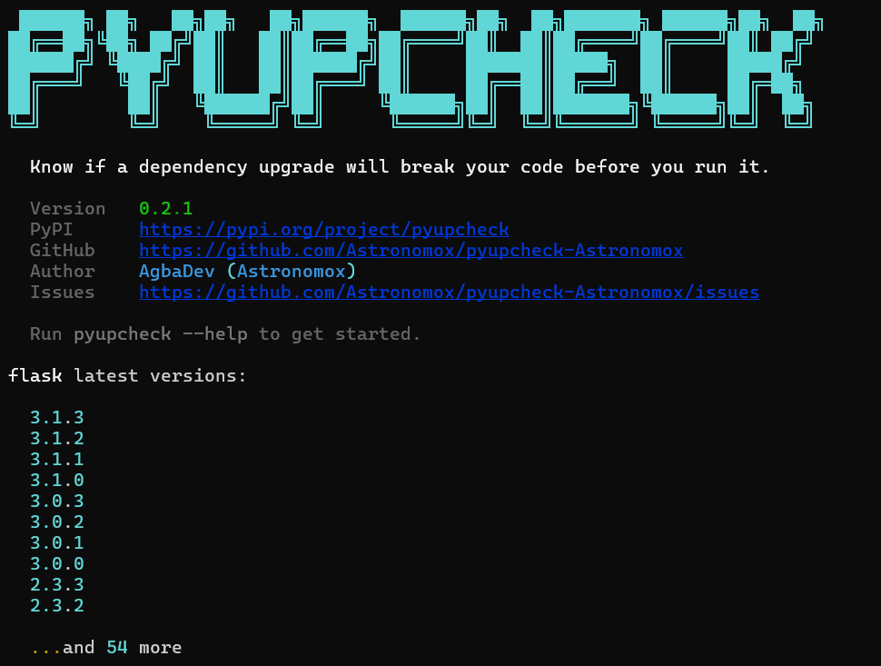

Scans your code, reads changelogs, tells you exactly what will break before you run pip install.
Every .py .pyi .ipynb. Finds imports, calls, kwargs.
Pulls from GitHub and PyPI. Finds removals and deprecations.
Diffs real signatures. Catches removed params at kwarg level.
Rewrites requirements.txt to safe versions. Dry-run first.
Exit code 1 on breaking changes. Generates Actions + pre-commit.
requirements.txt, pyproject.toml, setup.cfg, setup.py, env.yml
Open source. MIT licensed. Built by AgbaDev (Astronomox).